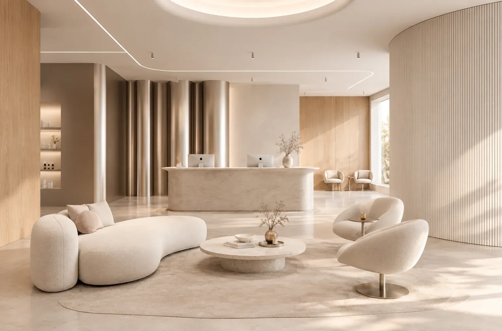

Minőség
Minden kezelés során a legjobb tudásom szerint, a bőröd egészségét szem előtt tartva dolgozom.
Hiszek a gondoskodás erejében, a precíz szakértelemben és abban, hogy minden bőr megérdemli a figyelmet. Nálam személyre szabott kezelést kapsz, amely a bőröd valódi igényeire épül.
Időpontot egyeztetek ↗

Szia, Eliza vagyok, az Eliza Beauty Salon megálmodója. A szépség mindig is az életem része volt, így nem volt kérdés, hogy a kozmetika lesz a hivatásom. 2011-ben megnyitottam saját szalonomat, ahol azóta is azon dolgozom, hogy vendégeim bőre ne csak szebb, hanem egészségesebb is legyen.
2018-ban a Beauty Academy szakmai trénereként és oktatójaként dolgoztam, segítve más kozmetikusokat a korszerű eljárások elsajátításában. 2019-ben mesterkozmetikusi címet szereztem. Hiszem, hogy a kozmetika többről szól, mint a szép bőrről: önbizalomról, jó közérzetről és énidőről is.
Megnyitottam az Eliza Beauty Salont.
A Beauty Academy szakmai trénereként és oktatójaként dolgoztam.
Mesterkozmetikusi címet szereztem.
Hiszek a minőségben, az őszinte szakértelemben és abban, hogy a jó eredményhez figyelem és korszerű megoldások kellenek.
Minden kezelés során a legjobb tudásom szerint, a bőröd egészségét szem előtt tartva dolgozom.
Őszintén beszélünk a lehetőségekről; felesleges ígéretek helyett szakmai figyelmet kapsz.
A természetes szépség kiemelése és a bőr hosszú távú támogatása a célom.
Folyamatosan tanulok, hogy naprakész tudással segíthesselek.
Nálam a kezelés a bőrödnek és a feltöltődésednek is szól.

A kezelések hatékonysága nemcsak a szakértelmen, hanem a környezeten is múlik. A korszerű technológiák, a gondosan választott hatóanyagok és a nyugodt, privát légkör egy helyen találkoznak. Itt minden arról szól, hogy a bőröd megkapja a figyelmet, te pedig kiszakadhass egy pillanatra a mindennapokból.
Egy jól megválasztott kezelés a bőrödnek és a közérzetednek is jót tehet. Keress bizalommal, és megbeszéljük a lehetőségeket.